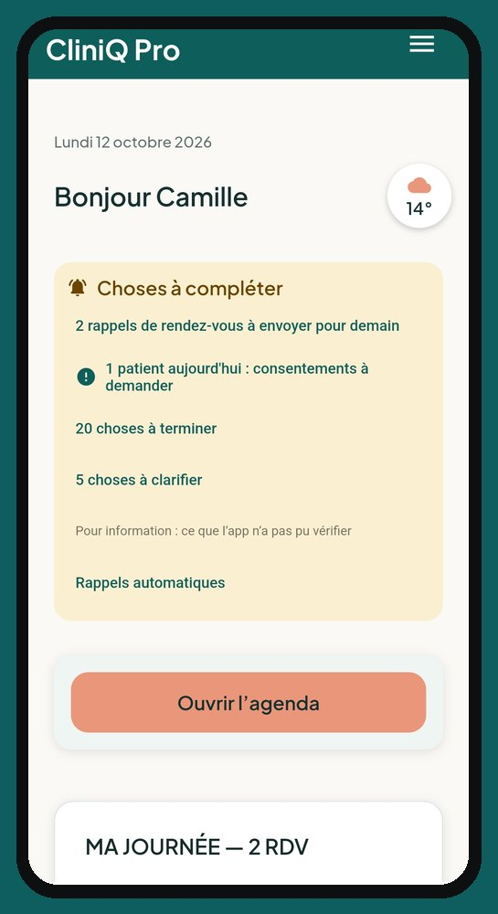
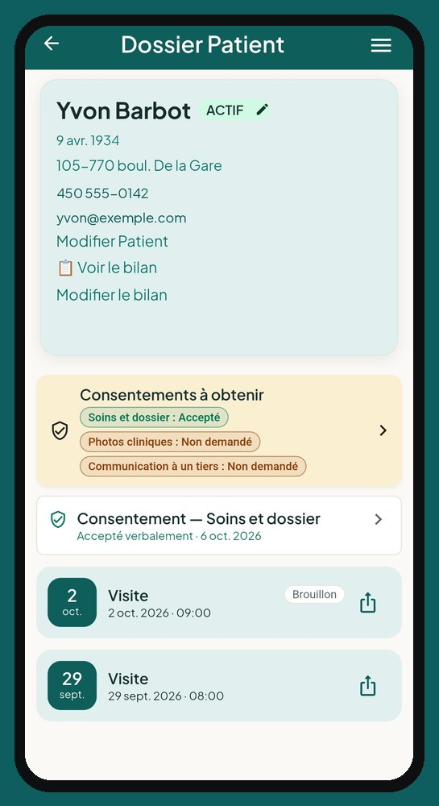
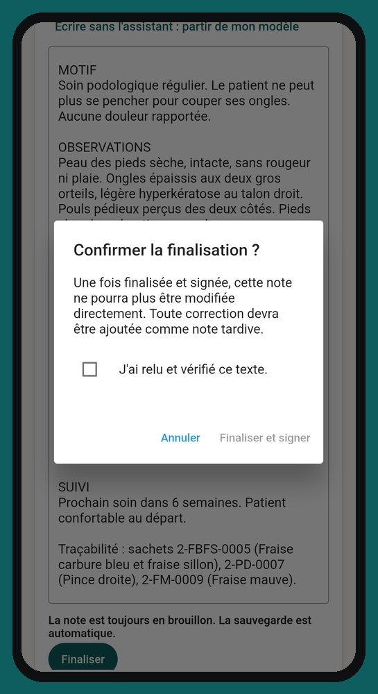
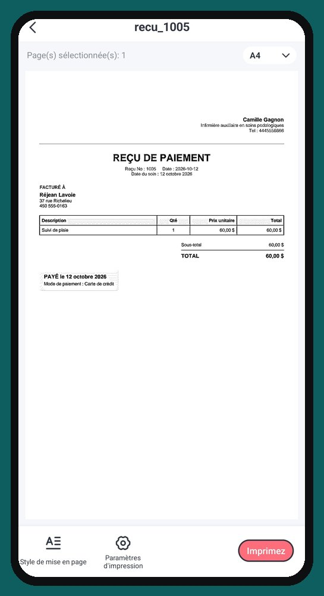
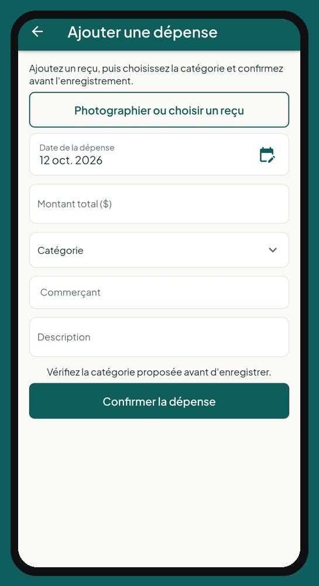
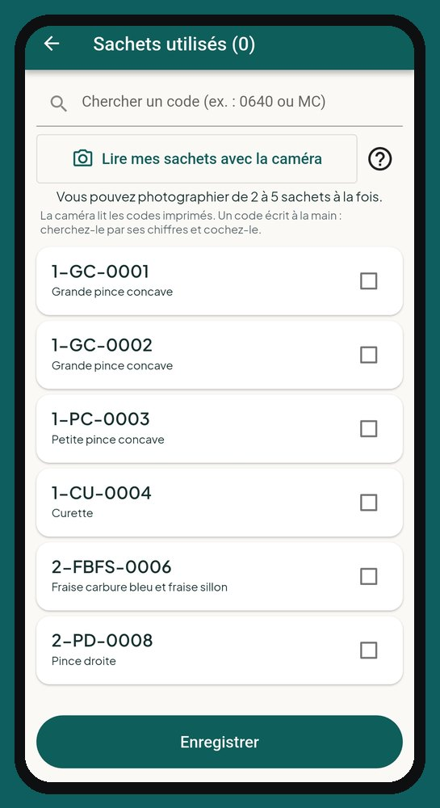
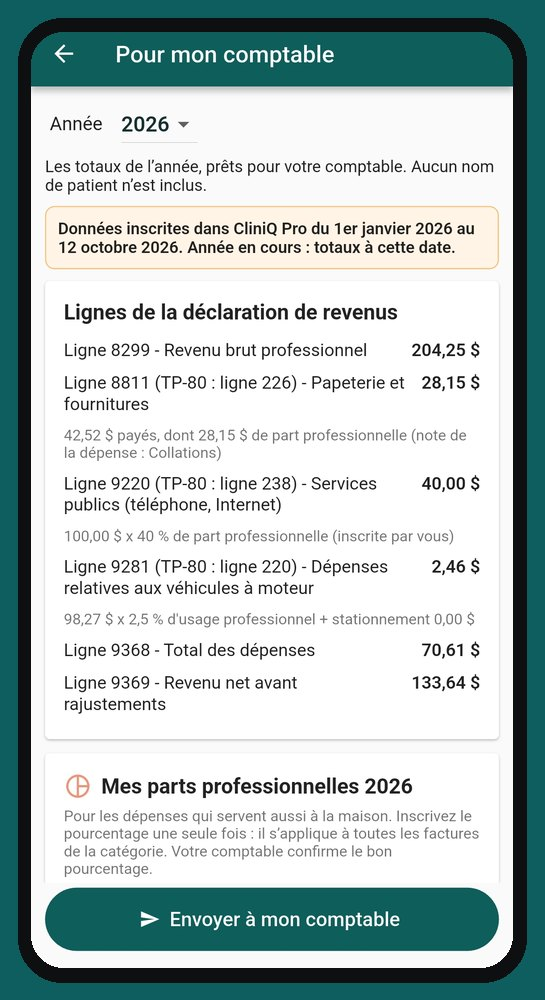

Votre tournée de soins, du premier rendez-vous au dernier kilomètre.
Agenda, dossier patient, notes signées, reçus, dépenses, kilométrage et registre de stérilisation, dans une seule application. Faite par une infirmière auxiliaire en soins podologiques qui fait la route elle aussi.
Nous vous écrirons avant le lancement, avec le guide pour bien démarrer. Vos coordonnées servent seulement à vous écrire au sujet de CliniQ Pro.
Pour Android et iPhone, en préparation. En français.
Avant, six outils. Maintenant, une seule app.
- l'agenda du téléphone
- les adresses recopiées
- le carnet de kilométrage
- la boîte de reçus
- le chiffrier des revenus
- les dossiers papier
Une journée avec CliniQ Pro
Du café du matin au retour à la maison.
-
7 h 457 h 45
Le café, puis l'accueil.
L'accueil va à l'essentiel : ce qui reste à compléter, si un oubli s'est glissé, et vos rendez-vous du jour.
Un patient appelle ? « Trouver un créneau » propose les heures libres selon la route depuis votre visite précédente, pour éviter les zigzags d'une ville à l'autre.


-
8 h 108 h 10
Un toucher, et le GPS part.
Touchez l'icône d'itinéraire du rendez-vous : le trajet jusque chez le patient s'ouvre dans le GPS de votre téléphone. Plus d'adresse à recopier dans l'auto.
-
8 h 308 h 30
Chez votre première patiente, les mains occupées.
Gros boutons, peu d'étapes : tout se fait d'un pouce, avec des gants.


Note signée, verrouillée
Une fois finalisée, la note ne change plus. Un oubli ? Une note tardive, datée, s'ajoute à côté.
Le sachet stérile tracé
Touchez le sachet utilisé. Si un lot est rappelé, vous savez tout de suite quels patients sont touchés.
Photos et consentements
Photos classées par côté et par moment, avant ou après le soin. Le registre garde l'accord, le refus ou le retrait, et qui l'a donné.
-
9 h 209 h 20
Le reçu part avant de remettre votre manteau.
Facture numérotée sans trou. Le reçu en PDF s'imprime ou s'envoie au patient par courriel ou par texto. Votre revenu est déjà compté.

-
12 h 0512 h 05
Un plein d'essence ? Une photo.
Photographiez le reçu : le montant se lit tout seul, un coup d'œil pour confirmer, et la dépense est classée avec sa pièce justificative. Une facture qui sert aussi à la maison, comme le cellulaire ? Vous inscrivez votre part professionnelle une fois, et le calcul se fait sur chaque facture.

-
17 h 4017 h 40
Dans l'entrée, le kilométrage est déjà fait.
Les trajets entre vos visites sont calculés pour vous : un coup d'œil pour confirmer la journée, et votre registre de kilométrage est à jour. L'odomètre, c'est une photo du compteur une fois par mois, pas à chaque voyage. Fini le carnet dans le coffre à gants.
-
18 h 1518 h 15
Le stérilisateur a fini, le registre aussi.
Inscrivez votre cycle une fois terminé : heure, indicateurs lus, sachets numérotés. Les codes des sachets se lisent à la caméra. Vos tests de spores ont leur place au registre. Le jour où on vous le demande, votre registre de stérilisation est complet et à jour.

-
31 déc.31 décembre
« Envoyer à mon comptable »
Un seul bouton prépare votre sommaire annuel en PDF : vos revenus, vos dépenses classées selon les lignes de la déclaration de revenus, la part professionnelle de vos dépenses partagées, votre kilométrage et la part d'usage de votre véhicule. Vos reçus de dépenses suivent, avec leurs photos. Il ne reste qu'à l'envoyer à votre comptable.

Vos données vous suivent, dans les deux sens
Arrivez avec votre liste de patients d'un seul coup : un fichier CSV tiré d'Excel ou de votre outil actuel. Et gardez une copie quand vous voulez : votre liste de patients s'exporte en CSV, et vos reçus de dépenses en PDF et en CSV, avec leurs photos.
Bilan de santé
Antécédents et médication, avec l'historique des changements.
Documents reçus
PDF et papiers photographiés, rangés dans le dossier du patient.
Copie d'une note
PDF d'une note finalisée, et registre des copies remises.
Aide dans l'app
Une page entière de questions fréquentes, avec recherche, et un assistant (IA) qui répond à vos questions sur l'application.
CliniQ Pro en vidéo
Cinq courtes vidéos de 30 à 60 secondes, faites avec un compte de test (patients fictifs).
Les dossiers de vos patients, protégés à chaque étape.
Vous restez responsable de vos dossiers. CliniQ Pro a été bâtie dès le départ pour vous aider à les protéger.
Hébergées au Canada
Les dossiers sont hébergés à Montréal. Quelques fonctions font appel à des services hors du Canada (lecture des reçus et de l'odomètre, calcul des trajets, aide, signalement des erreurs, connexion avec Google) : le détail sera dans la politique de confidentialité.
Chiffrées
Pendant l'envoi. Le chiffrement sur le serveur est assuré par l'hébergeur.
Chacun ses patients
La base de données elle-même empêche un compte de voir les patients d'un autre.
Téléphone verrouillé
Verrouillage automatique, mot de passe ou empreinte digitale. Captures d'écran bloquées par défaut (vous pouvez les permettre dans les réglages), aucune copie dans la sauvegarde du téléphone.
Mot de passe protégé
Mot de passe oublié : un code à 6 chiffres par courriel, puis toutes les connexions sont fermées, sur tous les appareils.
Des garde-fous contre les erreurs
Notes verrouillées, reçus impossibles à modifier, photos protégées. Un journal garde les actions importantes, et consentements, copies remises et incidents ont leur registre.
À propos de moi
« Je suis infirmière auxiliaire en soins podologiques à domicile. J'ai bâti CliniQ Pro pour mes propres journées, et je m'en sers chez mes patients. Chaque écran a été essayé sur la route, téléphone dans une main, gants aux mains. »
Nancy Proulx, créatrice de CliniQ Pro
Pour les soins de santé à domicile, partout au Canada
Soins infirmiers, soins podologiques (soins des pieds), soins de plaies et de stomies, inhalothérapie, réadaptation, physiothérapie et ergothérapie, santé mentale, soins dentaires, esthétique médicale et d'autres pratiques à domicile. Votre profil indique votre métier et votre ordre professionnel. L'application est offerte partout au Canada, dans toutes les provinces.
Questions fréquentes
Dans l'application, une page entière pour vos questions.
Vous n'êtes jamais seule devant un écran. La page « Aide et commentaires » réunit plus de 120 réponses, classées par sujet, avec une barre de recherche : tapez « facture » ou « odomètre » et la bonne réponse sort.
Pas trouvé ? Posez votre question dans vos mots : un assistant (IA) vous répond tout de suite, à partir de l'aide de l'application. Et si ce n'est toujours pas réglé, un bouton envoie votre question au soutien.
L'assistant explique l'application. Il ne donne pas d'avis clinique, légal ou fiscal, et on n'y écrit jamais de renseignement sur un patient.
En attendant, voici les questions qu'on me pose le plus souvent.
Avant de commencer
Est-ce que ça marche sur iPhone ?
Oui. CliniQ Pro sera offerte en même temps sur Android et iPhone, sur téléphone comme sur tablette.
Faut-il Internet ?
Oui, une connexion est nécessaire. Les données cellulaires du téléphone suffisent.
Puis-je l'utiliser sur une tablette ou un deuxième téléphone ?
Oui, avec le même compte, sur téléphone ou tablette.
Si j'arrête, que deviennent mes données ?
Vous pouvez exporter votre liste de patients et vos reçus de dépenses en tout temps. Les règles de conservation et de fermeture de compte seront précisées dans les conditions d'utilisation.
Ça convient à mon métier ?
Oui. CliniQ Pro est faite pour tous les soins de santé à domicile.
Pour commencer
Comment je fais venir mes patients actuels ?
Vous pouvez les importer d'un seul coup, à partir d'un fichier CSV tiré d'Excel ou de votre outil actuel. Vous pouvez aussi les ajouter un par un.
Est-ce que mes patients ont besoin d'un compte ?
Non. Seule la professionnelle a un compte. Vos patients n'ont rien à installer.
Y a-t-il de l'aide si je suis bloquée ?
Oui. L'application contient plus de 120 réponses, classées par sujet, avec une barre de recherche. Un assistant automatisé (IA) répond aussi aux questions sur l'utilisation de l'application ; il ne faut jamais y écrire de renseignement sur un patient.
Agenda et route
Est-ce que l'application calcule mon kilométrage ?
Oui. Les trajets entre vos visites sont calculés pour vous, et vous confirmez la journée d'un coup d'œil. L'odomètre se photographie une fois par mois.
Mon patient est absent à mon arrivée. Mon déplacement est-il perdu ?
Non. Vous cochez « Patient absent » et le déplacement reste compté, même sans soin.
L'application m'aide-t-elle à placer un nouveau rendez-vous ?
Oui. « Trouver un créneau » propose des heures libres selon la ville et la durée de la visite. L'application vous avertit aussi si le temps de déplacement entre deux rendez-vous paraît trop court.
Notes et dossiers
Puis-je modifier une note une fois signée ?
Non, et c'est voulu. Une note finalisée est verrouillée à votre nom, avec la date et l'heure. Pour un oubli, vous ajoutez une note tardive, datée, à côté.
Puis-je ranger une ordonnance ou un PTI reçu ?
Oui. Un PDF ou une photo du document se range dans le dossier du patient, et l'original reste intact.
Y a-t-il un registre de stérilisation ?
Oui. Vous y inscrivez vos cycles, vos sachets numérotés et vos tests de spores. Chaque sachet utilisé est relié à la visite où il a servi.
Argent et comptable
Puis-je facturer un produit, comme une crème ?
Oui. Vous l'ajoutez à la facture après le soin.
L'application lit-elle mes reçus de dépenses ?
Oui, à partir d'une photo : la date, le total et le commerçant sont remplis pour vous. Vous vérifiez avant d'enregistrer.
Mon cellulaire sert aussi à la maison. Comment ça se compte ?
Vous inscrivez votre part professionnelle, en pourcentage, une fois par année pour la catégorie : elle s'applique à toutes vos factures. Pour une facture particulière, vous pouvez plutôt inscrire le montant professionnel, avec une note. Le bon pourcentage se confirme avec votre comptable.
Qu'est-ce que mon comptable reçoit ?
Un PDF d'une page avec les totaux de l'année : revenus, dépenses par catégorie et véhicule, selon les lignes de la déclaration de revenus. Aucun nom de patient n'y figure. Votre comptable confirme toujours le classement.
Et si je ne suis pas inscrite aux taxes ?
L'application en tient compte : aucune taxe n'est ajoutée à vos factures. Elle vous avertit quand vos ventes taxables approchent le seuil où l'inscription devient obligatoire.
Sécurité
Que se passe-t-il si je perds mon téléphone ?
L'application se verrouille d'elle-même et demande votre mot de passe pour rouvrir. À partir d'un autre appareil, vous pouvez changer votre mot de passe et déconnecter vos autres appareils.
Téléchargez CliniQ Pro en toute sécurité
CliniQ Pro s'installe seulement à partir des boutiques officielles, Google Play et l'App Store, comme toutes vos autres applications. Aucun fichier à télécharger depuis un site, aucun réglage à changer sur votre téléphone.
- Google et Apple vérifient chaque application avant de l'offrir dans leur boutique.
- Les mises à jour arrivent toutes seules, par la boutique.
- Vous pouvez la désinstaller en tout temps, comme n'importe quelle application.
Ça vous intéresse ? Écrivez-nous.
Écrivez à notre soutien : soutien@cliniqpromobile.ca. Nous lisons tous les messages et répondons à toutes les questions.
Écrire au soutien